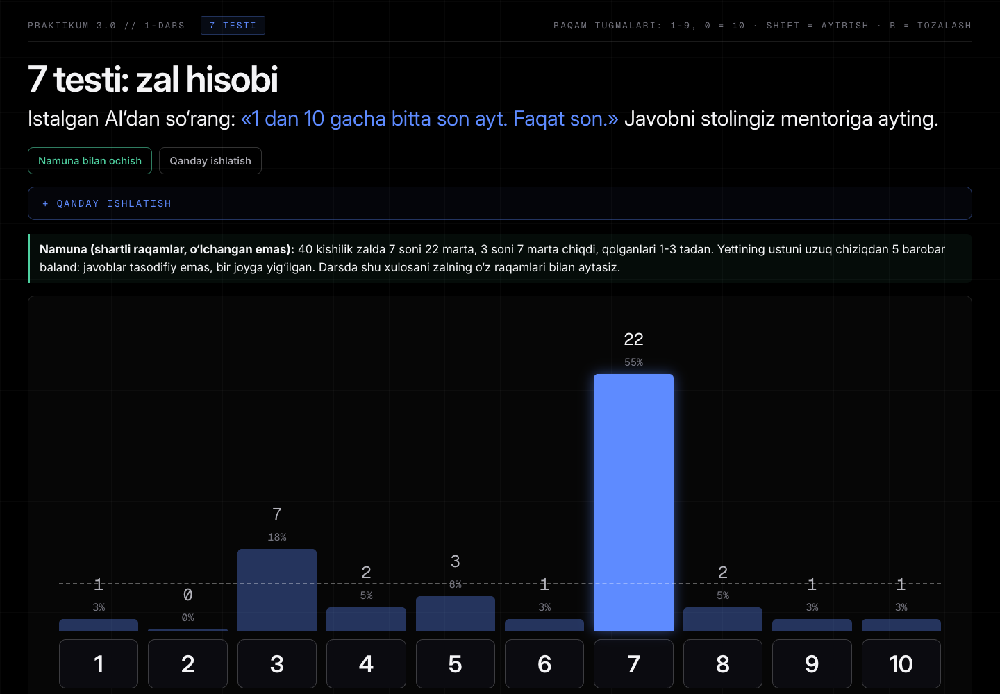

7 testi: qanday ishlatish
Sahifa: index.html, internetsiz ochiladi.
Darsda instruktor va mentorlar ishlatadi; uyda oilangiz yoki jamoangiz bilan qaytarish mumkin.
Nima uchun
Hamma bir xil savolni AI’ga beradi va javoblar bir-ikki songa yig‘ilganini ko‘radi. Bu «model tanlamaydi, eng ehtimolli javobni taxmin qiladi» degan fikrni o‘z ko‘zingiz bilan ko‘rsatadi.
Boshlashdan oldin kerak
- Har kimda telefon yoki noutbukda istalgan AI chat.
- Har stolda bitta sanovchi (darsda mentor).
Qadamlar
- Sahifani oching va R tugmasi bilan tozalang.
- Hamma so‘raydi: «1 dan 10 gacha bitta son ayt. Faqat son.»
- Sanovchi stolidagi javoblarni aytadi: «7 soni 4 ta, 3 soni 1 ta».
- Har javobni bosing: sonli tugma yoki klaviatura (0 = 10, Shift bilan ayiradi, Backspace oxirgisini bekor qiladi).
Natijani qanday o‘qish
- Uzuq chiziq: agar javoblar tasodifiy bo‘lganda, har bir son shu balandlikda bo‘lardi (10%).
- Baland ustun: ko‘p model bir xil javob beradi; bu taxmin, tanlov emas.
Namuna
«Namuna bilan ochish» shartli raqamlarni qo‘yadi (o‘lchangan emas): 40 javobdan 22 tasi 7, 7 tasi 3.

Yettining ustuni uzuq chiziqdan 5 barobar baland: javoblar bir joyga yig‘ilgan. Darsda xulosani zalning o‘z raqamlari bilan aytasiz.
Ko‘p uchraydigan xatolar
- Bir odamning javobini ikki marta sanash.
- «Har doim 7 chiqadi» deb va’da qilish: ba’zan 3 yoki 5 ko‘p chiqadi; muhimi, javoblar bir joyga yig‘iladi.
Tayyor
«Model son tanlamaydi, taxmin qiladi: shuning uchun uning raqamini tekshiraman» deb ayta olasiz.
Praktikum 3.0 · 1-dars · 21-noyabr (shanba) / 22-noyabr (yakshanba) 2026 · manba: day-1/demos/pick-a-number/pick-a-number.qollanma.md